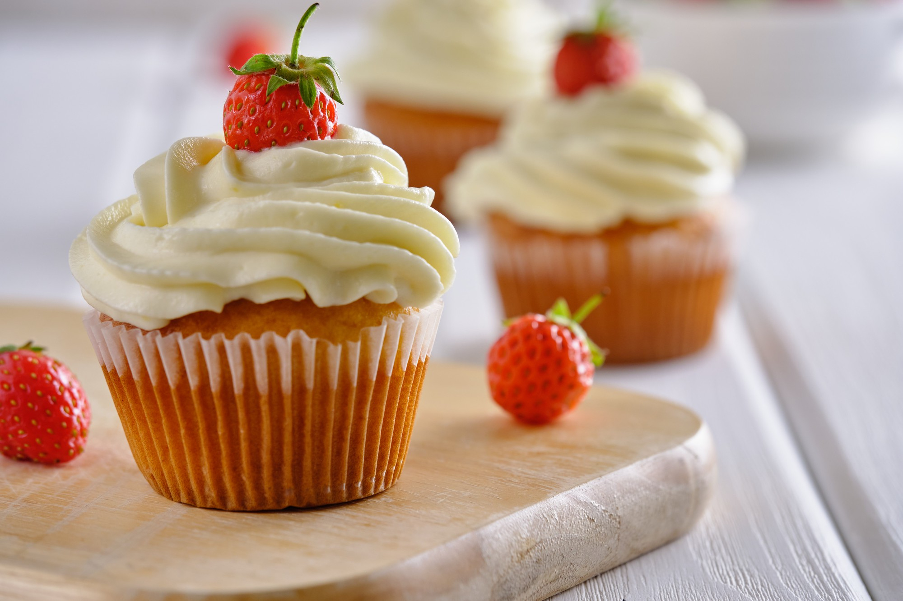
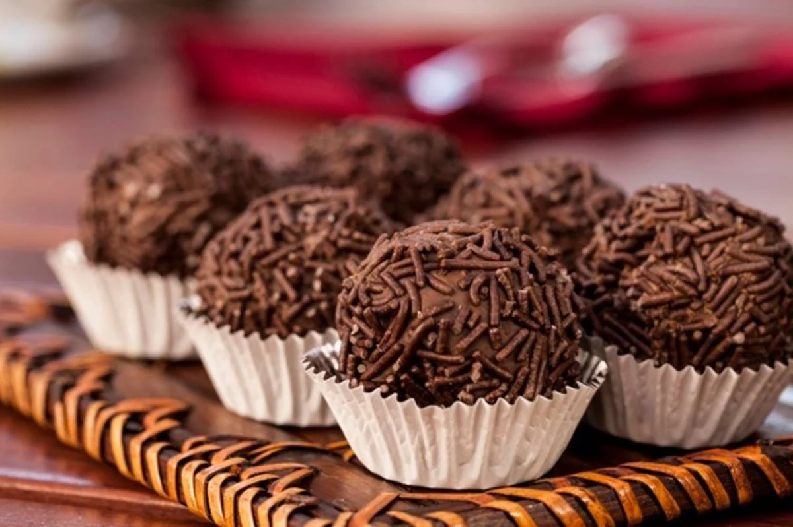

Somos uma pequena confeitaria especializada em cupcakes!! Tambem vendemos outros doces, como brownies e brigadeiros. Começamos a pouco tempo, mas não esperem que isso possa nos atrapalhar, temos confeiteros excelentes, fazendo seus doces com todo amor e carinho do mundo, além de um profissionalismo incrível. Olhe um pouco do site e do que estamos vendendo, obrigado pela escolha!!
A palavra cupcake em si significa “bolo de xícara”, o que serve como um breve resumo do que ele se parece ou é, mas há muito mais por trás desses bolinhos. O cupcake é um bolinho simples que pode ser recheado e enfeitado como você quiser, geralmente são utilizados confeitos, frutas, cremes e coberturas especiais para deixar os deliciosos cupcakes bonitos e ainda mais gostosos! Então, que tal provar nossos cupcakes?
Brownie é uma sobremesa de chocolate típico da culinária dos Estados Unidos e pode considerar-se um bolo feito num tabuleiro para bolos e partido em pequenos quadrados. O brownie é feito tradicionalmente com apenas cinco ingredientes: açúcar, chocolate, manteiga, farinha e ovos. Porém, com o tempo, outros ingredientes como nozes, castanhas e frutas secas foram sendo adicionados à receita, tornando-o ainda mais gostoso. Então, que tal provar nossos brownies?
O brigadeiro é uma sobremesa originalmente brasileira, criado em 1946 por uma doceira carioca. O doce, composto basicamente de leite condensado e achocolatado, porém a sobremesa é totalmente diversificada, podendo trocar o achocolotado por outros ingredientes. Faz parte da cultura do país e da maioria de festas brasileiras, tendo atualmente, outras versões em outros países. A boa notícia é que os delicosos brigadeiros são especialidade da casa. Garanta já o seu!!
